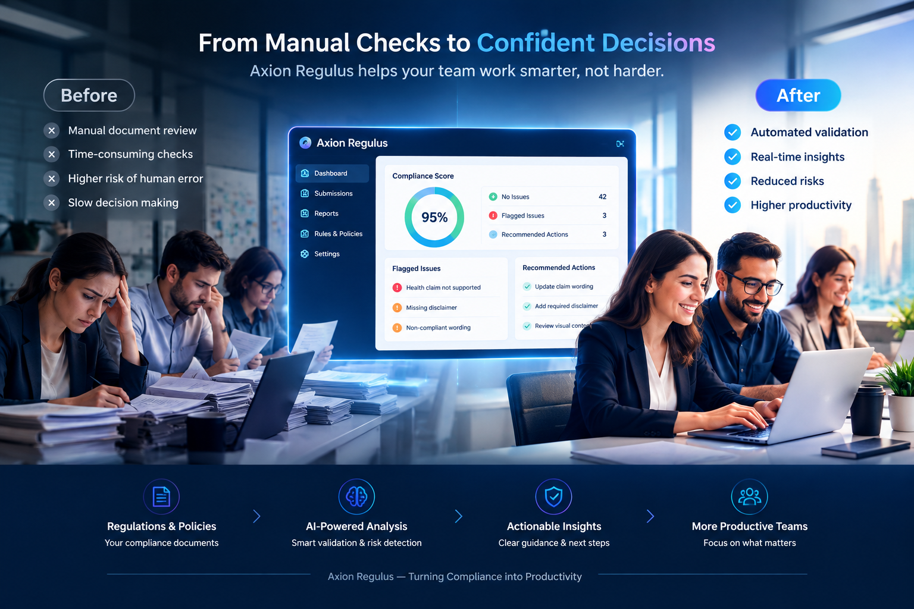
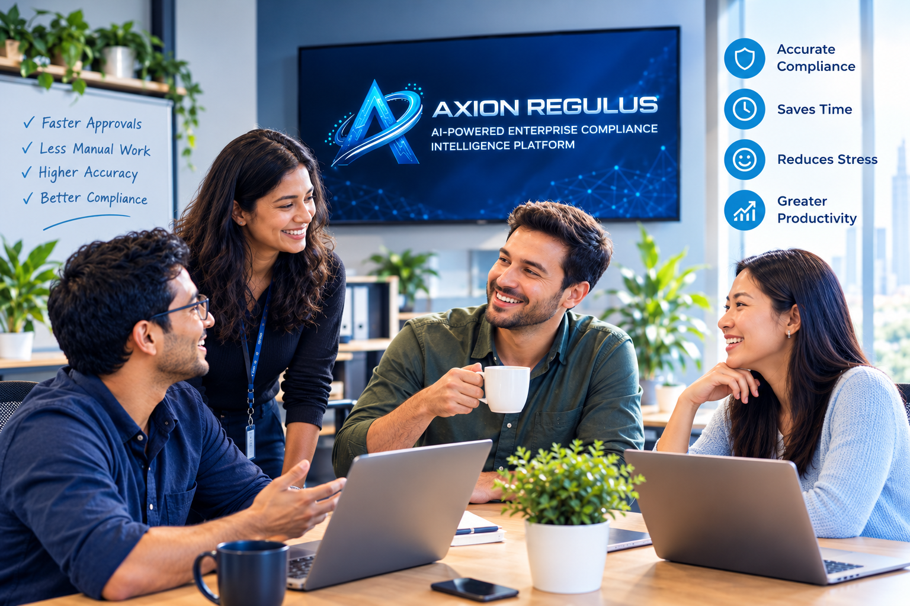

Axion Regulus is an AI-powered Enterprise Compliance Intelligence Platform that converts regulatory documents into automated validation systems for real-time business compliance.
LESS MANUAL WORK. FASTER DECISIONS.
Compliance managers, risk professionals, legal and governance teams, and marketing reviewers use Axion Regulus to move through regulatory review faster — with structured evidence and a shared view of what needs attention.
THE COMPLIANCE PROBLEM
Regulations constantly change across jurisdictions and industries
Manual document interpretation takes significant time and effort
Business content can contain hidden regulatory risk
Different teams may interpret the same rules differently
Compliance evidence is difficult to maintain and retrieve
Manual reviews increase operational cost at scale
THE AXION REGULUS SOLUTION
Upload regulatory documents, policies and guidelines.
AI analyzes and structures regulatory information.
Requirements are transformed into structured validation rules.
Business content is evaluated against applicable rules.
Potential violations, gaps and risks are highlighted.
Teams receive recommendations, evidence and next steps.
PRODUCT FEATURES
PRODUCT DASHBOARD
USE CASES
SEE IT IN ACTION
Business content is checked against structured, regulation-derived rules — with a clear reason and a recommended next step for every flag.
Reason: Potentially unsupported health claim.
Recommendation: Review or modify the claim based on the applicable regulatory framework.
Designed for the teams responsible for keeping modern businesses compliant.
Teams stay in control of every compliance decision, with AI support at each step.

Structured workflows help teams move from review to resolution faster.

Clear evidence and reasoning behind every compliance assessment.
SECURITY & ENTERPRISE TRUST
A secure environment for regulatory documents and compliance intelligence — access-controlled and fully auditable.
A CORE DIFFERENTIATOR
Axion Regulus combines AI-powered analysis with human supervision to help organizations evaluate regulatory requirements, identify risks and make informed compliance decisions.
PARTNERSHIPS
Axion is open to strategic partnerships with technology companies, IT consulting firms, compliance consultants, system integrators, enterprise software companies and regulatory technology partners.
Bring Axion Regulus to your enterprise customer base.
Integrate compliance intelligence into existing platforms.
Extend reach across new regions and industries.
Represent Axion Regulus in your market.
Deliver Axion Regulus deployments for clients.
Co-build solutions for regulated industries.
FOR INVESTORS
Axion Consultancy Services is actively seeking seed investment and strategic venture partners to accelerate product development, expand enterprise adoption and scale Axion Regulus into new markets.
Expand AI capabilities, compliance intelligence, automation and enterprise features.
Expand across the UAE, GCC and international markets.
Build partnerships and accelerate adoption across regulated industries.
ABOUT AXION
Axion Consultancy Services develops technology designed to help organizations interpret regulatory requirements, validate business content and improve compliance workflows through AI-assisted intelligence.
Make regulatory compliance faster, clearer and more consistent for enterprise teams.
A world where compliance intelligence is built into every business decision.
Axion Regulus — an AI-powered enterprise compliance intelligence platform.
A focused team building for regulated industries and enterprise adoption.
AI-assisted analysis paired with structured human review and oversight.
Discover how Axion Regulus can help your organization transform regulatory requirements into actionable compliance intelligence.
GET IN TOUCH
Demo requests, partnership inquiries and investor conversations all start here.
FAQ
Axion Regulus is an AI-powered Enterprise Compliance Intelligence Platform that converts regulatory documents into automated validation systems, helping your business stay compliant in real time.
Axion Regulus combines AI automation with human supervision at every critical step, so every compliance decision can be reviewed and verified by your team before it's finalized.
We use enterprise-grade encryption, strict access controls and audit logging to protect your data, and we're built to align with major industry security and compliance standards.
Axion Regulus is designed to work across regulated industries such as finance, healthcare and marketing, adapting to a wide range of regulatory frameworks as your business needs evolve.
Simply request a demo through the contact form above. Our team will walk you through the platform and help you understand how it fits your compliance workflow.
We welcome partnership and investment conversations — reach out via the contact form above or email us directly at info@axionast.com.